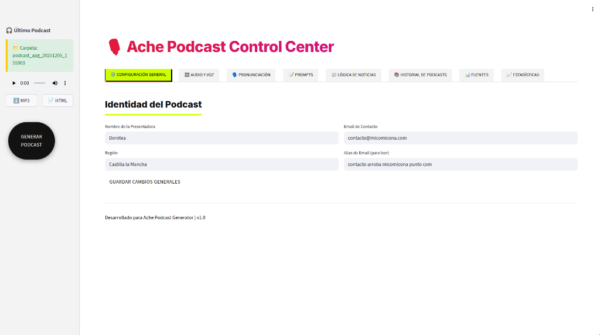

Gestiona cada aspecto de tu producción de audio con un panel de control diseñado para profesionales.

Monitoriza la salud de tus feeds RSS. Detecta fuentes inactivas y optimiza tu flujo de información.
Define el tono, estilo y humor de Dorotea. Desde formal y serio hasta casual y divertido.
Acceso a las últimas voces de Google Cloud TTS. Calidad de estudio sin necesidad de estudio.
Filtra noticias por región, provincia o municipio. Contenido hiperlocal generado automáticamente.
Control total sobre los prompts del sistema. Ajusta cómo la IA interpreta y resume las noticias.
Arquitectura lista para producción. Escala tus operaciones de podcasting sin límites.